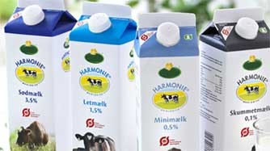
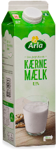
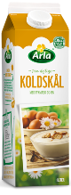
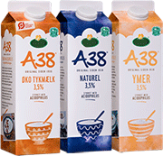
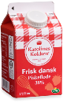
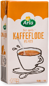
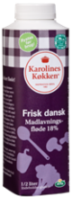
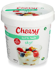

In this article you can read about different types of dairy products in Denmark and make your
shopping
shorter and easier. At the same time, you learn a little Danish which is not a
disadvantage in the case
that you are living here.
I bet you, this situation has happened to you at the first time you were in a Danish shop. You wanted
to buy just one simple bottle of milk. You were standing in front of the shelves and before you know
it, you’re thinking, what the hell is A38?
via GIPHY
Welcome to Denmark’s grocery stores, where there are many different dairy products.
Luckily, the
cartons all look the same with totally diverse contents.
They don’t really make it easy for you. There isn’t an English description on anything. If you don’t
speak their language, you are in a bit of a pickle. If you’re unlucky, you might drink your coffee with
tykmælk which is not a pleasure.
Namely, tykmælk means ‘thick/fat milk’ which is made from soured milk. Doesn’t sound like a nice
coffee, right?
via GIPHY
Milk? Yes!
Danes like to identify their preferred milk by carton color. The darker the blue the
fatter the milk.
If you think about it, it does make sense, and 99,9% of all milk producers respect this unwritten
rule.
Skimmed milk cartons however have a light grey color. Of course there had to be an exception.

Dark blue
Sødmælk [Sweet milk] whole milk (full fat). Fat: 3,5 %
Light blue
Letmælk [Light milk] reduced fat milk. Fat: 1,5 %
Ice blue
Minimælk [Mini milk] low fat milk Fat: 0,5 %
Grey
Skummetmælk [Skimmed milk] nonfat milk - Fat: 0,1 %
Milk? Well, not really...
That was the easy part. So far, it wasn’t a big deal to figure out which milk is which. The hard part
starts now, when next to the milk cartons you will find some similar ones that have the most confusing
names ever. It's difficult to guess what you are buying even when you know some Danish.

Kærnemælk (Churned milk) Buttermilk approx. 0,5% fat
You might think that you got this. You know what ‘mælk’ means, so it sounds like a secure
choice. But, ohh boy you better think twice, because this is buttermilk and it tastes nothing
like milk.
Look out for the green cartons.
Koldskål (Cold-bow): Cold buttermilk soup
The Danes eat it with dry vanilla biscuits as a snack, dessert or even for dinner. It's a thick
lightly
sweetened buttermilk with vanilla and
sometimes lemon. The cartons are usually
yellow.

Tykmælk, ymer & A38

Soured milk products between 0,5% to 3,5% fat
Ymer, A38 and tykmælk is where it often goes horribly wrong for newcomers. Directly translated
'tykmælk'
means 'thick/fat milk'.
All three products are actually made from soured milk and are used for breakfasts (as a replacement
for
yoghurt), fast snacks, baking, desserts, dressings and NOT for coffee. Every Dane
has
they own
favorite.
Piskefløde
Whipping cream, comes in a red carton (38% fat).

Kaffefløde
Coffee cream (9% fat).

Madlavningsfløde
Cream with added flour and is used for cooking
(8 or 18% fat), comes in a purple carton.

Skyr
Icelandic style yogurt approx. 0,2% fat
It is fat free, high in protein and with reduced sugar, making it perfect for the healthy Danes.
But beware, even the Danes can be seduced and skyr also comes with added flavours and loads of
sugar.

I really hope this article helps you a lot and you can make your shoppings easier than before.